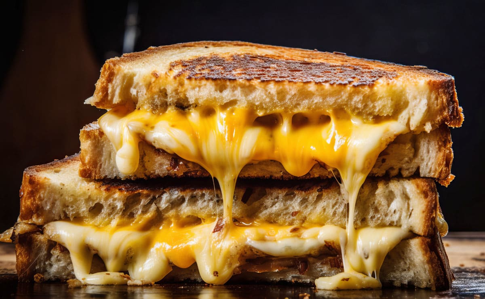

Sandwich de Queso Fundido

Descripción
Para los amantes del queso con poco tiempo, traemos la solución
Ingredientes
- Pan de molde
- Queso al gusto
Pasos
- Preparamos el grill a máxima potencia
- Entre dos rebanadas de pan de molde, añadimos el queso
- Colocamos el sandwich en el grill y cerramos, dejando que el queso funda
- Cuando esté al gusto, sacar y dejar enfriar
- Disfrutar